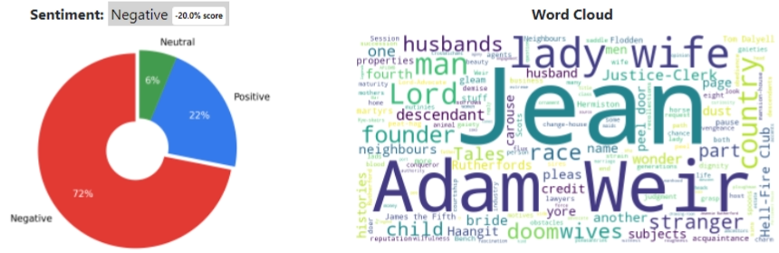

Analyze Text with VizRefra
2D & 3D Mapping, Text Analysis, Topic modeling
Analyze File or Text
Classification:
Books & Literature 57.0% confidence
Summary
THE Lord Justice-Clerk was a stranger in that part of the country; but his lady wife was known there from a child, as her race had been before her. And besides, he was an ill man to refuse. It was a wonder to many that she had married - seeming so wholly of the stuff that makes old maids. At that very hour of his demise, he had ten going pleas before the Session, eight of them oppressive. Weir!"
